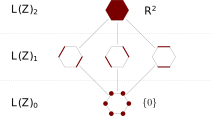
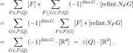
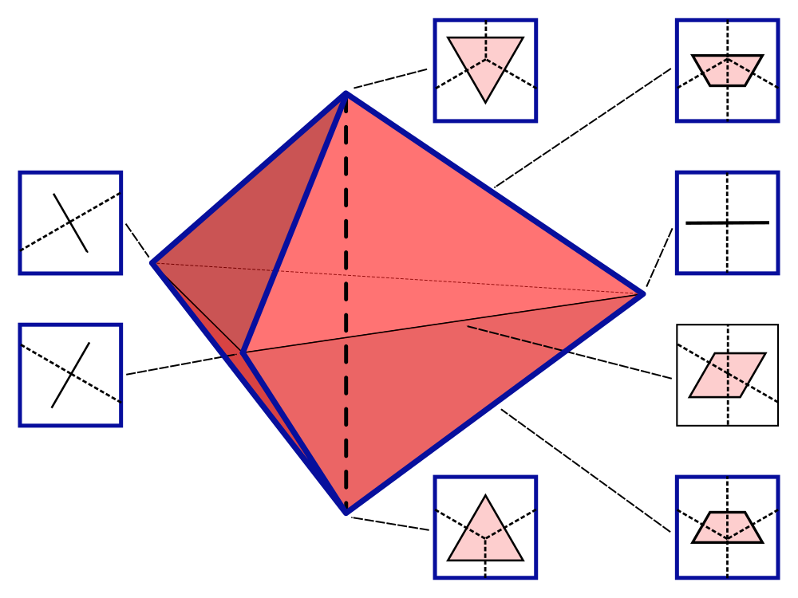
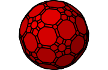
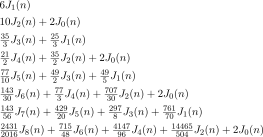
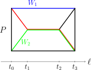
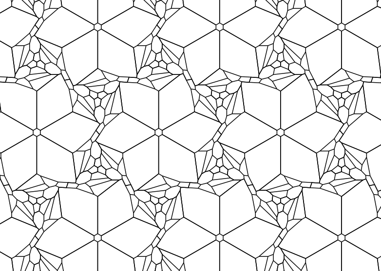

Angles on cones
Generalized angle vectors, geometric lattices, and flag-angles
With Spencer Backman and Raman Sanyal. arXiv

Abstract:
Interior and exterior angle vectors of polytopes capture curvature
information at faces of all dimensions and can be seen as metric
variants of $f$-vectors. In this context, Gram's relation takes the
place of the Euler-Poincaré relation as the unique linear relation
among interior angles. We show the existence and uniqueness of
Euler-Poincaré-type relations for generalized angle vectors by
building a bridge to the algebraic combinatorics of geometric
lattices, generalizing work of Klivans-Swartz. We introduce
flag-angles of polytopes as a geometric counterpart to
flag-$f$-vectors. Flag-angles generalize the angle deficiencies of
Descartes-Shephard, Grassmann angles, and spherical intrinsic volumes.
Using the machinery of incidence algebras, we relate flag-angles of
zonotopes to flag-$f$-vectors of graded posets. This allows us to
determine the linear relations satisfied by interior/exterior
flag-angle vectors.
Angle sums of simplicial polytopes
Abstract:
The interior angle vector ($\widehat{\alpha}$-vector) of a polytope is
a metric analogue of the $f$-vector in which faces are weighted by
their solid angle. For simplicial polytopes, Dehn-Sommerville-type
relations on the $\widehat{\alpha}$-vector were introduced by
Sommerville (1927) and Höhn (1953). Camenga (2006) defined the
$\widehat{\gamma}$-vector, a linear transformation analogous to the
$h$-vector and conjectured it to be non-negative. Using tools from
geometric and algebraic combinatorics, we prove this conjecture and
show that the $\widehat{\gamma}$-vector increases in the first half
and is flawless. In contrast to the $h$-vector, we construct a
six-dimensional polytope with non-unimodal $\widehat{\alpha}$-vector.
More generally, all result remain valid when solid angles are replaced
by simple and non-negative cone valuations.
Fan Valuations and spherical intrinsic volumes
With Spencer Backman and Raman Sanyal. arXiv

Abstract:
We generalize valuations on polyhedral cones to valuations on fans.
For fans induced by hyperplane arrangements, we show a correspondence
between rotation-invariant valuations and deletion-restriction
invariants. In particular, we define a characteristic polynomial for
fans in terms of spherical intrinsic volumes and show that it
coincides with the usual characteristic polynomial in the case of
hyperplane arrangements. This gives a simple deletion-restriction
proof of a result of Klivans-Swartz. The metric projection of a cone
is a piecewise-linear map, whose underlying fan prompts a
generalization of spherical intrinsic volumes to indicator functions.
We show that these 'intrinsic indicators' yield valuations that
separate polyhedral cones. Applied to hyperplane arrangements, this
generalizes a result of Kabluchko on projection volumes.
Inscribed polytopes
Inscribable fans I: Inscribed cones, virtual polytopes, and routed particle trajectories
With Raman Sanyal. arXiv

Abstract:
We investigate polytopes inscribed into a sphere that are normally
equivalent to a given polytope $P$. We show that the associated space
of polytopes, called the inscribed cone of $P$, is closed under
Minkowski addition. Inscribed cones are interpreted as type cones of
ideal hyperbolic polytopes and as deformation spaces of Delaunay
subdivisions. In particular, testing if there is an inscribed polytope
normally equivalent to $P$ is polynomial time solvable. Normal
equivalence is decided on the level of normal fans and we study the
structure of inscribed cones for various classes of polytopes and
fans, including simple, simplicial, and even. We classify (virtually)
inscribable fans in dimension $2$ as well as inscribable permutahedra
and nestohedra. A second goal of the paper is to introduce inscribed
virtual polytopes. Polytopes with a fixed normal fan $\mathcal{N}$
form a monoid with respect to Minkowski addition and the associated
Grothendieck group is called the type space of $\mathcal{N}$. Elements
of the type space correspond to formal Minkowski differences and are
naturally equipped with vertices and hence with a notion of
inscribability. We show that inscribed virtual polytopes form a
subgroup, which can be nontrivial even if $\mathcal{N}$ does not have
actual inscribed polytopes. We relate inscribed virtual polytopes to
routed particle trajectories, that is, piecewise linear trajectories
of particles in a ball with restricted directions. The state spaces
gives rise to connected groupoids generated by reflections, called
reflection groupoids. The endomorphism groups of reflection groupoids
can be thought of as discrete holonomy groups of the trajectories and
we determine when they are reflection groups.
Inscribable Fans II: Inscribed zonotopes, simplicial arrangements, and reflection groups
With Raman Sanyal.

TBD
Further papers
Coprime Ehrhart theory and counting free segments
With Raman Sanyal. arXiv

Abstract:
A lattice polytope is "free" (or "empty") if its vertices are the only
lattice points it contains. In the context of valuation theory, Klain
(1999) proposed to study the functions $\alpha_i(P;n)$ that count the
number of free polytopes in $nP$ with $i$ vertices. For $i=1$, this is
the famous Ehrhart polynomial. For $i>3$, the computation is likely
impossible and for $i=2,3$ computationally challenging. In this paper,
we develop a theory of coprime Ehrhart functions, that count lattice
points with relatively prime coordinates, and use it to compute
$\alpha_2(P;n)$ for unimodular simplices. We show that the coprime
Ehrhart function can be explicitly determined from the Ehrhart
polynomial and we give some applications to combinatorial counting.
S-hypersimplices, pulling triangulations, and monotone paths
With Raman Sanyal and Jeonghoon So. arXiv

Abstract:
An $S$-hypersimplex for $S\subseteq \{0,1,\dots,d\}$ is the convex
hull of all $0/1$-vectors of length $d$ with coordinate sum in $S$.
These polytopes generalize the classical hypersimplices as well as
cubes, crosspolytopes, and halfcubes. In this paper we study faces and
dissections of $S$-hypersimplices. Moreover, we show that monotone
path polytopes of $S$-hypersimplices yield all types of
multipermutahedra. In analogy to cubes, we also show that the number
of simplices in a pulling triangulation of a halfcube is independent
of the pulling order.
New Eberhard-type theorems
Master thesis. Supervision by Ulrich Brehm. PDF

Abstract:
Eberhard-type theorems are statements about the realizability of a
polytope (or more general polyhedral maps) given the valency of its
vertices and sizes of its polygonal faces up to a linear degree
of freedom. We present new theorems of Eberhard-type where we allow
adding two kinds of polygons and one type of vertices. We derive a
full classification of these results.